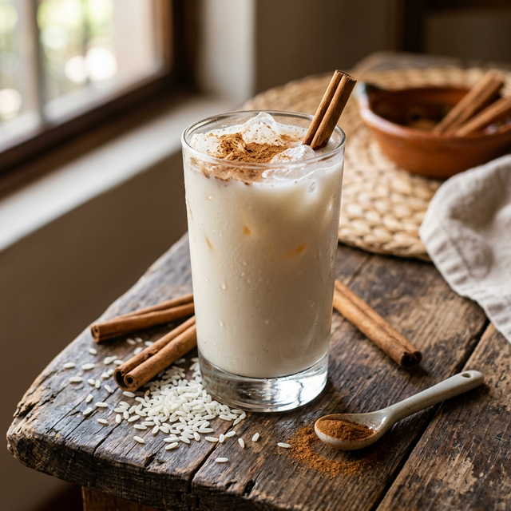
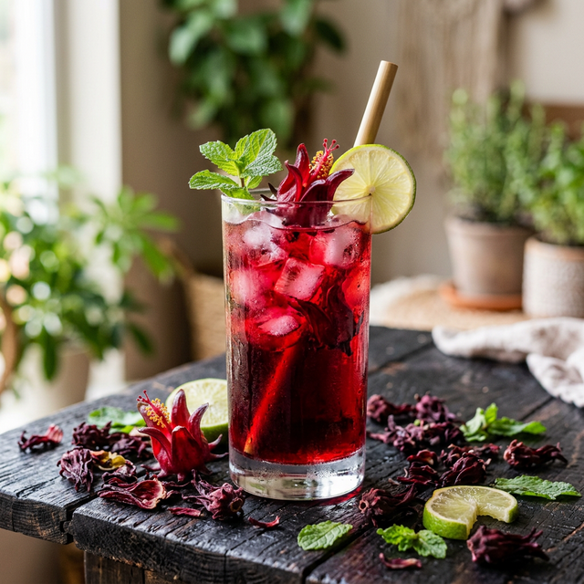
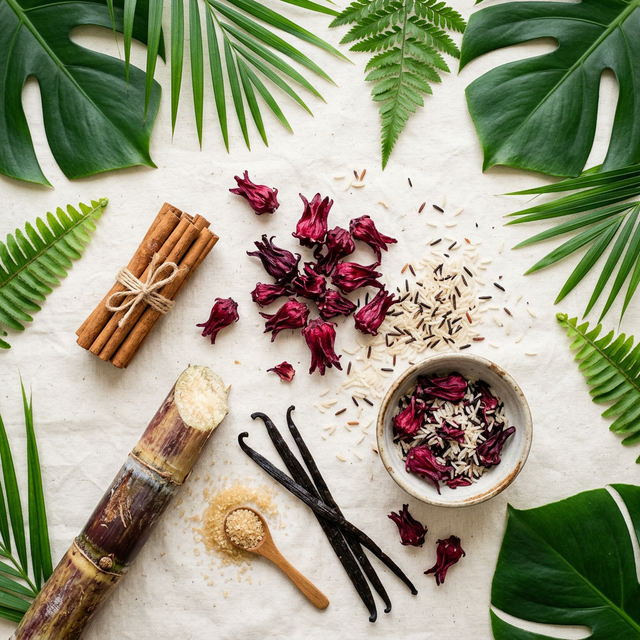

Horchata y Jamaica preparadas cada día con ingredientes frescos, sin conservadores y con todo el amor artesanal.


La bebida que nunca pasa de moda.
Preparada cada mañana con arroz remojado, canela fresca, leche y un toque de vainilla. Cremosa, reconfortante y sin aditivos. Nuestra Horchata, orgullo guatemalteco, es el abrazo que necesitas en cualquier momento del día.
Ver presentaciones →Roja, floral e irresistible.
Flor de Jamaica hervida lentamente con piloncillo y especias secretas. Un sabor profundo entre lo dulce y lo ácido que te deja queriendo más. Antioxidante, refrescante y perfecta para el calor de Guatemala.
Ver presentaciones →¿Tienes una boda, convivio o reunión corporativa? Deleita a tus invitados con nuestra horchata y jamaica artesanal. Ofrecemos estaciones de bebidas personalizadas para que tu evento sea inolvidable.
Cotizar para mi eventoLleva la esencia de Naturalia a donde quieras. Nuestras mezclas artesanales en polvo están listas para disfrutar en segundos.
Solo necesitas mezclar con agua o leche y hielo para obtener la misma frescura y balance que servimos en nuestro local.
Pedir mis polvosNuestra receta estrella lista para disolver en agua o leche. Cremosa y con el toque justo de canela.
Flor de Jamaica natural pulverizada con piloncillo. Disuelve en agua y disfruta al instante.

Naturalia nació en 2026 en Guatemala del amor por las bebidas que nos crecimos tomando: la horchata de la abuela, la jamaica del mercado. Nos preguntamos por qué algo tan perfecto y natural tenía que volverse industrial y artificial.
Por eso decidimos hacer las cosas diferente desde Mixco. Cada día preparamos nuestras bebidas con ingredientes seleccionados, sin atajos y sin comprometer el sabor auténtico que hace que estas bebidas sean únicas.
Solo usamos lo que la naturaleza provee, sin colorantes ni saborizantes artificiales.
Cada lote se prepara a mano, con las mismas técnicas de siempre.
Proveedores locales, empaques reciclables y prácticas responsables.
"La mejor horchata que he probado en años. Realmente se siente el sabor casero y la canela recién molida. 100% recomendada."
"El agua de Jamaica tiene el punto perfecto de dulce. Me encanta que usen piloncillo en lugar de azúcar refinada. Se nota la calidad."
"Contratamos Naturalia para nuestra boda y fue un éxito total. El servicio fue impecable y a todos les encantaron las bebidas."